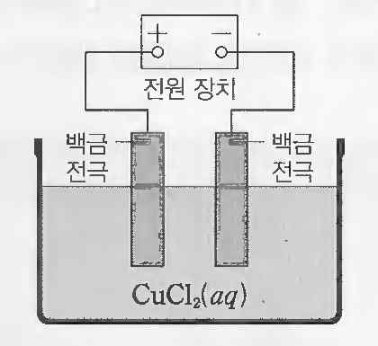

문제 3
3-1
(1) 아보가드로 법칙에 대해 설명하시오. (2) 표준 상태의 산소 기체 11.2 L의 질량은 몇 g인가?
3-2
(a) \(\text{Zn}(s)\) | \(\text{Zn}^{2+}(aq)\) || \(\text{Cu}^{2+}(aq)\) | \(\text{Cu}(s)\) 로 구성된 다니엘 전지의 구성도를 그리시오. (\(\text{Zn}^{2+}(aq) + 2e^- \to \text{Zn}(s)\) 표준환원전위: -0.76V, \(\text{Cu}^{2+}(aq) + 2e^- \to \text{Cu}(s)\) 표준환원전위: +0.34V)
(b) 전자의 흐름을 표시하시오.
(d) 자유에너지 변화 (\(\Delta G^\circ\)) 를 이용해서 위 반응의 자발성을 판단하시오.
3-3
그림은 \(\text{CuCl}_2(aq)\) 를 전기 분해하는 장치를 나타낸 것이다.

(a) (+)극과 (-) 극에서 일어나는 반응의 화학 반응식을 각각 적으시오.
(b) t초 동안 \(\text{Cl}_2(g)\) 0.01몰이 생성되었다면, t초 동안 흘려준 전하량은 얼마인가? (패러데이 상수는 96,500 C/몰 이다)